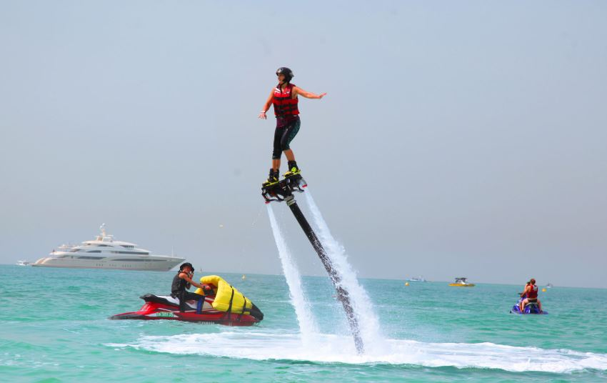
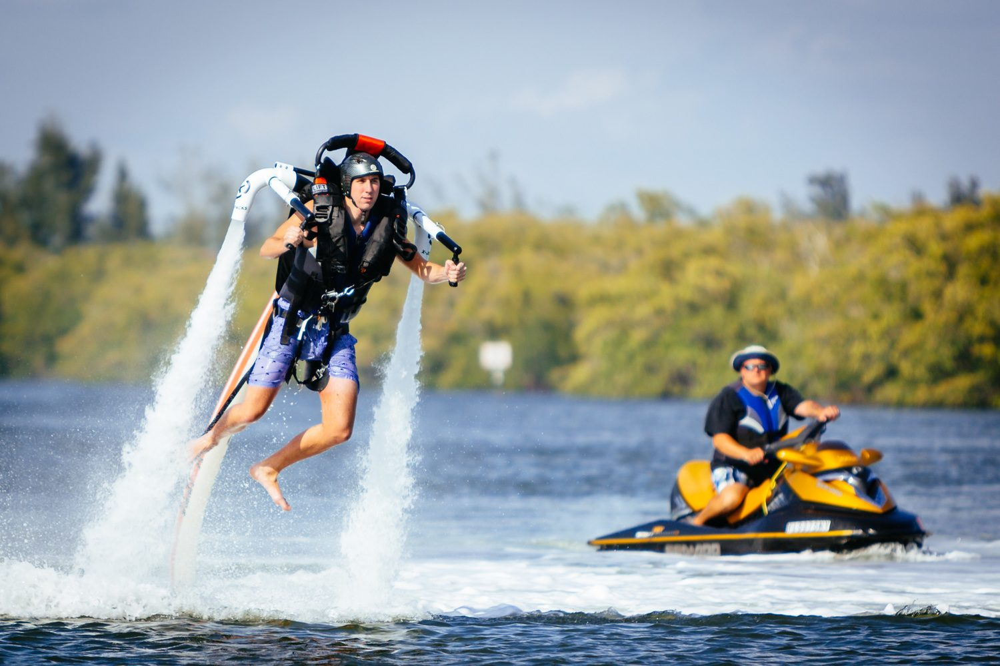
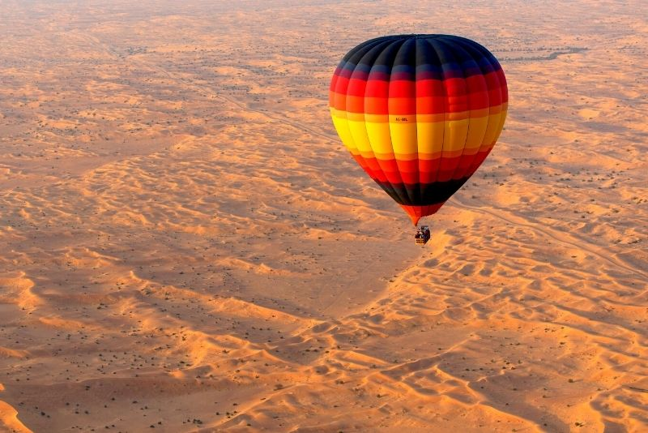
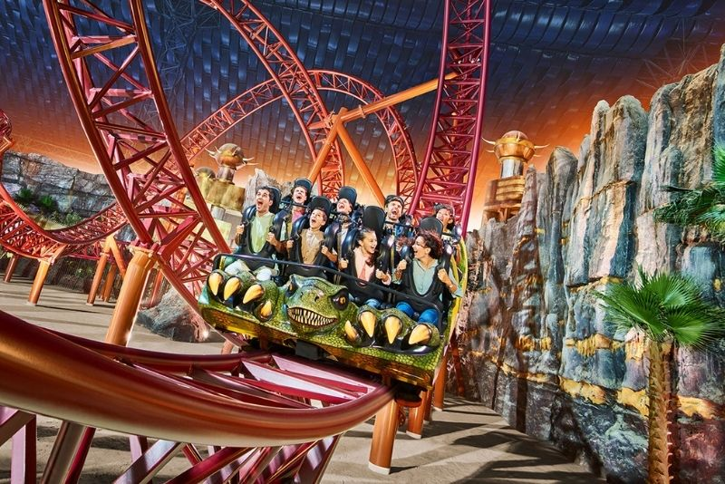
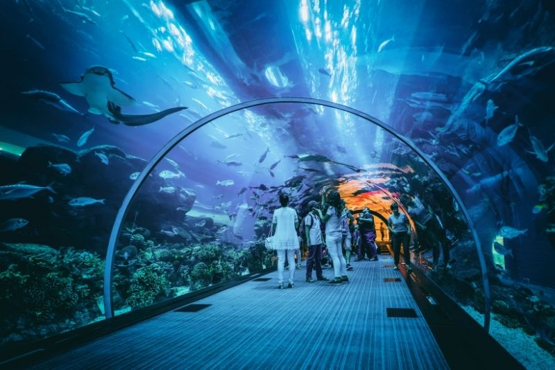

An interesting fact about Dubai: Dubai’s police force uses supercars to impress tourists and show how “classy” the city is. This includes cars such as the Ferrari FF (US$ 500,000), Lamborghini Aventador (US$ 397,000) and an Aston Martin One-77 (US$ 1.79 million). And they hold a world record for the fastest police car; a Bugatti Veyron which they purchased for US$ 1.6 million! In comparison, attending New York University, the most expensive college in the USA, costs about $248,000 for four years!
Camel racing is a very popular sport in Dubai, similar to what football is to the USA and hockey to Canada. Given the camel’s size, only children can participate in racing them. Instead of allowing Dubai residents’ children to participate, there has been a problem in the past with having children illegally trafficked into the country to race camels. The rest of the world eventually caught on to the issue and has since put a stop to it for the most part. Leave it to Dubai to come up with a solution. Now, child-sized robots are being built and are racing the camels. They cost anywhere from $300 to $10,000 .
Things in Dubai always seem to have to be the biggest, the tallest or the most unique, so this latest development fits in perfectly. Dubai Square, as it will be called, will be equivalent to the size of 100 football fields! It is inspired by the world’s best shopping destinations such as London‘s Oxford Street and Los Angeles‘s Beverly Hills, but is said to become much more than just a shopping mall. After reading all these other facts about Dubai I am sure you can expect this to have some unique, over the top features and be very entertaining<\p>


Known for its sustainability initiatives, Al Marmoom is abundant with native wildlife such as gazelles, camels and birds. Once considered globally extinct, the Arabian oryx has successfully been saved after breeding programmes and re-introductions in the UAE, including at Al Marmoom. To catch a glimpse of the elusive oryx, head over to their feeding stations around the area. If birdwatching is your passion, visit the nearby Al Qudra lakes, home to 170 bird species including some endangered kinds like the Steppe Eagle and the Asian Houbara. The calming waters of Al Qudra lakes are also a welcome spot for nature-lovers to enjoy a picnic. Early risers can head over at dawn to catch a glorious desert sunrise.
Dance And music


This fan favourite may be tiny - its original Jumeirah branch has just five counter seats while a second outpost at Al Khawaneej is a tad bit bigger – but its fame ensures loyal diners are happy to take-away or eat in their cars. The High Jamz is a particular hit, with caramelised and crispy onions, Pepper Jack cheese, beef bacon and a ranch sauce melding together beautifully with the wagyu beef patty. Vegetarians are well served by the excellent aioli-topped King Shroom too. French Michelin starred chef Daniel Boulud is ironically best known for a dish that is decidedly all-American, the burger. He has appropriately titled his elevated take on the classic the Frenchie Burger au Feu de Bois – a juicy, wood-fired triumph with raclette cheese, onion and tomato compote and pickle sauce. This is the unabashedly fine dining take on the humble patty, and definitely worthy of a treat night.
Water Events
Water sports in Dubai – Here’s 11 activities! Things To Do In Dubai Lorena - Community Blogger 1 Comment Dubai has a wide range of exciting and amazing restaurants in stock for its visitors, but apart from that. It also has a variety of activities for the thrill seeker. Experience extravagant and exciting water sports activities in Dubai experiences of Dubai in your mind forever. Jet Ski Want to find out how it feels like to zing past the luxurious and iconic buildings like the Atlantis hotel and the Burj Al Arab, the picturesque Palm Jumeirah, and gaze at the skyline of Dubai Marina? Then Jet Ski-ing is the ideal activity for you. You can enjoy the blue sky over, and clear water under, as family, couple or even solo. Nemo Water Sports, Shark Jet Ski Rental are big names for Jet Ski in the city. Snorkelling The blue seas in Dubai are no less beautiful than anywhere else in the world. Perfect calm waters for a day of exciting snorkelling activity with your family and friends for open and cage snorkelling are always waiting for you. The Dubai Aquarium Cage Snorkelling, Al Boom Diving, Ambassador’s Lagoon are all ideal places. Scuba Diving If you are more adventurous, and want to swim with fish and sharks, then a notch up from snorkelling is Scuba Diving, which is a popular water sport in Dubai. For that you might want to look at our diving listings available for all level – kids 7 years and above can even experience this!
The Trek UAE bike shop, located at the end of Al Qudra Road, is a great place to rent your bike. Part of the track has road access for cars, but most of the track is for cyclists. Additionally, the path is equipped with rest stations along the way that offer benches and shade. You’ll also find restrooms located adjacent to Trek UAE and where Bab Al Shams Road meets Al Qudra.<\p> 
Soar over the radiant orange Dubai desert at sunrise in a hot air balloon, an activity that manages to be simultaneously relaxing and exhilarating. Keep an eye out for camels and gazelles roaming the sands — although, at 4,000 feet high, you might have to squint. Flights include a hearty breakfast and open-air transport in vintage Land Rovers. <\p> 
As Dubai’s answer to Universal Studios, this Hollywood-inspired theme park is a perfect day out for movie fans! Guests are transported into the filmmaking worlds of DreamWorks Animation, Columbia Pictures, and Lionsgate, with rides themed around hits like Ghostbusters, Kung-Fu Panda, and The Hunger Games. In total, Motiongate offers 27 rides and attractions including five roller coasters, a water ride to cool off, immersive dark rides, play labs, and 4D theatre sh
As the planet’s largest indoor theme park, it’s no wonder that Worlds of Adventures is a Dubai crowd favorite, welcoming over 20,000 guests each day. The park is divided into four so-called ‘Epic Zones’, all of which boast hair-raising thrill rides centered around popular Cartoon Network characters, MARVEL superheroes, and dinosaurs. Test your courage at the Haunted Hotel or embrace an awesome 3D experience at the Novo Cinemas zone!
The Under Water Train Marvel at Dubai's record-breaking under water train
Situated on the main floor of the sprawling Dubai Mall, the Dubai Aquarium houses 33,000 diverse marine animals, spanning everything from crocodiles to tropical fish. The ‘Researcher Experience’ takes guests behind the scenes of the Underwater Observatory, while the ‘Explorer Experience’ includes a glass-bottom boat tour. If you’re brave enough, you can even swim with rays and sharks! For the best bang for your buck, grab a ticket that combines the aquarium with a trip up to the Burj Khalifa’s viewing platform.